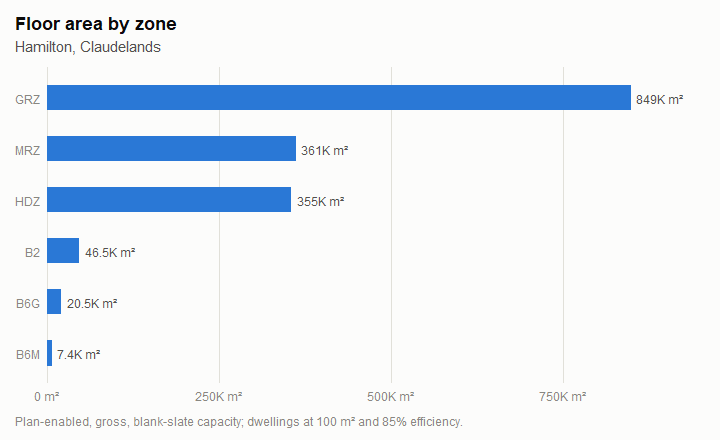
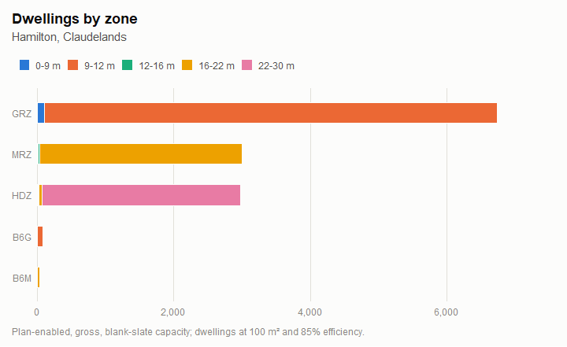
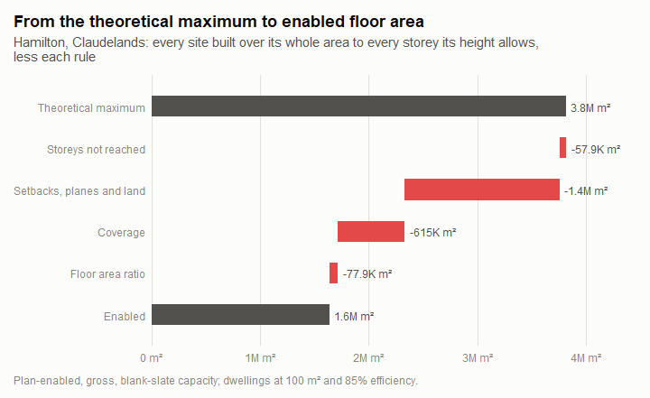
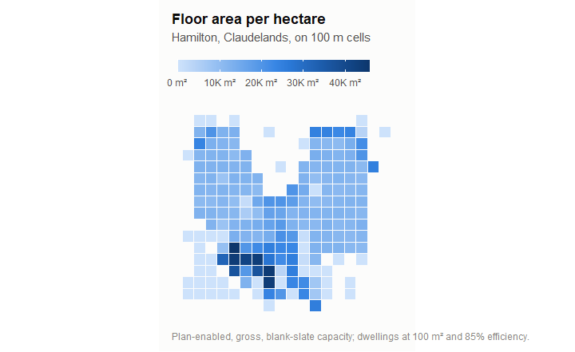
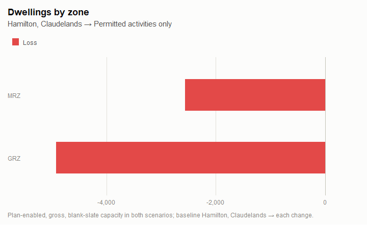

This vignette adds a real jurisdiction from nothing: Hamilton, New Zealand. It follows the route a planner or analyst would take with a plan they have not modelled before: read the plan, enter its rules in the Excel template, prepare the parcels and the zoning, run capacity, check it, and ask a question of it. Everything here was done once, on 23 November 2026, with the plan as it then stood.
1. Read the plan
Hamilton’s rules are in the Hamilton City Operative District Plan, read in its online ePlan at the revision of 13 November 2026. Plan Change 12 (Enabling Housing Supply), Hamilton’s response to the National Policy Statement on Urban Development, was made operative on 20 December 2024 and is part of that text. The walkthrough covers the zones of one area, Claudelands and Hamilton East: General, Medium Density and High Density Residential (Chapter 4), and the Business 6 (neighbourhood centre) and Business 2 zones (Chapter 6).
For each zone, the rules that shape a building or count its dwellings
were written down with their rule numbers (the notes are in
data-raw/hamilton/rules_notes.md in the package source). In
summary:
| General Residential | Medium Density Residential | High Density Residential | Business 6 | |
|---|---|---|---|---|
| Height | 10 m (4.2.5.4) | 18 m, 5 storeys (4.3.4.4) | 26 m (4.4.5.4) | 11 m next to General Residential, 18 m next to Medium Density (6.4.1) |
| Recession plane | 45° from 4 m, not to a road (4.2.5.5) | one or two units: 60° from 4 m, 45° to General Residential; three or more attached units: no plane on side boundaries within 20 m of the road, 60° from 6 m beyond (4.3.4.5) | only to other zones: 45° to General Residential, 60° from 6 m to Medium Density beyond 20 m (4.4.5.5) | 45° from 4 m to General Residential, 60° to Medium Density (6.4.2) |
| Setbacks | road 1.5 m, side and rear 1.5 m (4.2.5.6) | road 1.5 m, side and rear 1 m (4.3.4.6) | 1 m; parts over 11 m 4 m back (4.4.5.6, 4.4.5.14) | 0 m front; 1.5 m to a residential zone (6.4.3) |
| Coverage | 45% (4.2.5.2) | 50% (4.3.4.2) | 60% (4.4.5.2) | floor area ratio 2:1 or 3:1 (6.4.4) |
| Landscaping | 20% (4.2.5.3) | 20% (4.3.4.3) | 10% (4.4.5.3) | none at ground floor dwellings: none allowed (6.4.7) |
| Dwellings | two per site permitted, more restricted discretionary (4.2.3.1) | three per site permitted, more restricted discretionary (4.3.3.1) | three or more restricted discretionary (4.4.3.1) | above ground floor only (6.3, 6.4.7) |
Some rules have no layer to apply them to here (the 5 m setback from arterial roads needs the road hierarchy; a density rule applies only inside an infrastructure overlay; a riverbank hazard setback). They are not dropped: they go in the rulebook’s register of rules not modelled, with the direction each would move capacity.
2. Enter the rules in the template
rulebook_template() writes an empty workbook with one
sheet per kind of rule and a fields sheet explaining every
column. The rules above were typed into it, a row per zone, a row per
setback, each with its citation:
f <- system.file("extdata", "hamilton_rulebook.xlsx", package = "plancap")
if (!nzchar(f)) f <- "../inst/extdata/hamilton_rulebook.xlsx"
z <- openxlsx2::read_xlsx(f, sheet = "zones")
z[z$method != "none", c("zone", "codes", "height", "storeys", "coverage_max", "landscaping_min", "far_max", "height_source")]
#> zone codes height storeys coverage_max
#> 2 GRZ General Residential 10 NA 0.45
#> 3 MRZ Medium Density Residential 18 5 0.50
#> 4 HDZ High Density Residential 26 NA 0.60
#> 5 B6G Business 6 (General Residential) 11 NA NA
#> 6 B6M Business 6 (Medium Density Residential) 18 NA NA
#> 7 B2 Business 2 16 NA NA
#> landscaping_min far_max height_source
#> 2 0.2 NA HCC ODP 4.2.5.4
#> 3 0.2 NA HCC ODP 4.3.4.4 a
#> 4 0.1 NA HCC ODP 4.4.5.4
#> 5 NA 2 HCC ODP 6.4.1
#> 6 NA 3 HCC ODP 6.4.1
#> 7 NA 2 HCC ODP 6.4.1
s <- openxlsx2::read_xlsx(f, sheet = "setbacks")
s[s$target == "MRZ", c("target", "kind", "boundaries", "distance", "angle_deg", "start_height", "above_height",
"within_frontage", "beyond_frontage", "adjacent_zones", "not_adjacent_zones", "variant")]
#> target kind boundaries distance angle_deg start_height above_height
#> 6 MRZ yard road 1.5 NA NA NA
#> 7 MRZ yard side 1.0 NA NA NA
#> 8 MRZ yard rear 1.0 NA NA NA
#> 9 MRZ plane side, rear NA 60 4 NA
#> 10 MRZ plane side, rear NA 45 4 NA
#> 11 MRZ upper_level side 4.0 NA NA 11
#> 12 MRZ plane side, rear NA 60 6 NA
#> 13 MRZ plane side, rear NA 45 4 NA
#> within_frontage beyond_frontage adjacent_zones not_adjacent_zones
#> 6 NA NA <NA> <NA>
#> 7 NA NA <NA> <NA>
#> 8 NA NA <NA> <NA>
#> 9 NA NA <NA> GRZ
#> 10 NA NA GRZ <NA>
#> 11 20 NA <NA> GRZ
#> 12 NA 20 <NA> GRZ
#> 13 NA NA GRZ <NA>
#> variant
#> 6 <NA>
#> 7 <NA>
#> 8 <NA>
#> 9 single_duplex
#> 10 single_duplex
#> 11 attached
#> 12 attached
#> 13 attachedMedium Density’s two sets of standards (one or two units; three or more attached) are entered as two variants: each site is built under both and takes the one that enables more. Business 6’s residential share is a band by storey, none on the ground floor:
openxlsx2::read_xlsx(f, sheet = "bands")
#> target rule by upper value
#> 2 B6G residential_share storey 1 0
#> 3 B6G residential_share storey NA 1
#> 4 B6M residential_share storey 1 0
#> 5 B6M residential_share storey NA 1
#> source
#> 2 HCC ODP 6.4.7 b: no residential activity at ground floor
#> 3 <NA>
#> 4 HCC ODP 6.4.7 b: no residential activity at ground floor
#> 5 <NA>The workbook reads back as a rulebook, checked against the schema and for missing citations:
rb <- read_rulebook(f)
rb
#> <plancap rulebook> Hamilton City Operative District Plan (residential zones and
#> Business 6, walkthrough extract)
#> hamilton-odp-2026 | Hamilton | NZ | as at 2026-11-13
#> 11 zones, 0 overlays, 0 areas, 0 bonuses, 0 entitlements; 7 unmodelled rules.
#> Units: metres.
#> zone label
#> GRZ General Residential Zone
#> MRZ Medium Density Residential Zone
#> HDZ High Density Residential Zone
#> B6G Business 6 Zone, adjacent to the General Residential Zone
#> B6M Business 6 Zone, adjacent to the Medium Density Residential Zone
#> B2 Business 2 Zone (Events Facilities Fringe)
#> CFZ Community Facilities Zone
#> MFZ Major Facilities Zone
#> OSZ Open Space Zones
#> INZ Industrial Zone
#> TCZ Transport Corridor Zone
#> method height setbacks coverage codes
#> volumetric 10 4 0.45 General Residential
#> volumetric 18 8 0.5 Medium Density Residential
#> volumetric 26 7 0.6 High Density Residential
#> volumetric 11 3 Business 6 (General Residential)
#> volumetric 18 3 Business 6 (Medium Density Residential)
#> volumetric 16 3 Business 2
#> none 0 Community Facilities
#> none 0 Major Facilities
#> none 0 Open Space
#> none 0 Industrial
#> none 0 Transport Corridor
validate_rulebook(rb)
#> ✔ Rulebook is valid (0 warnings, 0 notes).
head(rule_table(rb)[, c("zone", "rule", "value", "applies_to", "source")], 12)
#> zone rule value applies_to
#> 1 GRZ method volumetric <NA>
#> 2 GRZ height 10; occupiable 10 <NA>
#> 3 GRZ setback:yard 1.5 m road
#> 4 GRZ setback:yard 1.5 m side
#> 5 GRZ setback:yard 1.5 m rear
#> 6 GRZ setback:plane 45 deg from 4 m side, rear
#> 7 GRZ coverage_max 0.45 <NA>
#> 8 GRZ landscaping_min 0.2 <NA>
#> 9 GRZ impervious_max 0.7 <NA>
#> 10 GRZ density.minor_dwellings_per_site 1 <NA>
#> 11 GRZ use.residential TRUE <NA>
#> 12 GRZ use.business FALSE <NA>
#> source
#> 1 HCC ODP 4.2 General Residential Zone
#> 2 HCC ODP 4.2.5.4
#> 3 HCC ODP 4.2.5.6 a: local and collector transport corridors
#> 4 HCC ODP 4.2.5.6 b
#> 5 HCC ODP 4.2.5.6 d
#> 6 HCC ODP 4.2.5.5: 45 degrees from 4 m, all boundaries except a road
#> 7 HCC ODP 4.2.5.2
#> 8 HCC ODP 4.2.5.3 b
#> 9 HCC ODP 4.2.5.3 a
#> 10 HCC ODP 4.2.3.1, 4.2.6.1: ancillary residential unit, one per site
#> 11 HCC ODP 4.2.3.1
#> 12 HCC ODP 4.2.3.13. Prepare the parcels and zoning
Two layers come from their publishers, cut to a square of about 1.4 km over Claudelands and Hamilton East:
- parcels: LINZ NZ Primary Parcels (CC BY 4.0), split into land parcels and road parcels;
- zoning: Hamilton City Council’s District Plan Zones. The council asks that its data be attributed to it and that derived work say it is not the authoritative source: this is derived work, not Hamilton City Council’s data. The zoning is not shipped with the package.
The zoning layer needs three changes before plancap can use it, which
is typical of a council layer
(data-raw/hamilton/prepare.R):
- Zone names become the codes the rulebook’s zone map expects
(
codesin the zones sheet). - Business 6’s height and floor area ratio depend on the residential zone it adjoins, so each centre polygon is coded by its neighbour.
- Two features are not zones: the Industrial Amenity Protection Area (an overlay stored with the zones) and the Transport Corridor Zone.
The third was found the useful way. The first run left the Transport
Corridor Zone in, and check_capacity() failed its land
check: the sites added to twice the land in the parcels. That zone is a
single polygon under every other zone, so it split nearly every parcel
in two. Roads come from the road parcels, so the polygon is dropped.
source("../data-raw/hamilton/prepare.R")
h <- hamilton_inputs("../data-raw/cache/hamilton")
table(h$zoning$zone)
#>
#> Business 2 Business 6 (General Residential)
#> 2 2
#> Business 6 (Medium Density Residential) Community Facilities
#> 2 6
#> General Residential High Density Residential
#> 50 5
#> Major Facilities Medium Density Residential
#> 1 13
#> Open Space
#> 23
nrow(h$parcels)
#> [1] 14744. Run capacity and check it
sc <- scenario("Hamilton, Claudelands", rb, parcels = h$parcels, roads = h$roads, zoning = h$zoning)
cap <- estimate_capacity(sc)
summary(cap)
#>
#> ── Capacity: Hamilton, Claudelands ──
#>
#> 1,493 sites on 187.5 ha: 1,639,304 m2 of floor area (1,580,456 m2 residential,
#> 58,847 m2 business), 12,829 dwellings and 0 minor dwellings.
#> Plan-enabled, gross, blank-slate capacity; dwellings at 100 m2 and 85%
#> efficiency.
#>
#> ── By zone
#> zone_key sites land_area floor_area dwellings far floor_area_share
#> (none) 121 87,120 0 0 0.00 0.0%
#> B2 20 23,245 46,491 0 2.00 2.8%
#> B6G 18 10,256 20,513 80 2.00 1.3%
#> B6M 12 2,591 7,387 37 2.85 0.5%
#> CFZ 35 305,192 0 0 0.00 0.0%
#> GRZ 970 721,053 848,576 6,732 1.18 51.8%
#> HDZ 91 86,529 355,024 2,980 4.10 21.7%
#> MFZ 2 163,624 0 0 0.00 0.0%
#> MRZ 162 160,558 361,314 3,000 2.25 22.0%
#> OSZ 62 314,655 0 0 0.00 0.0%
#>
#> ── Flags
#> no_capacity 54, no_capacity_zone 99, no_zone 121, ok 1,219
#>
#> ── What limits dwellings
#> floor_area 1,273
check_capacity(cap)
#> ✔ parcels accounted for: 1474 of 1474 (every input parcel is in a site)
#> ✔ land in equals land out: 1874825 of 1874825 m2 (site areas add to parcel areas (overlaps aside))
#> ✔ storeys add to sites: 1639304 m2 (floor area by storey equals floor area by site)
#> ✔ uses add to floor area: (residential plus business equals floor area)
#> ✔ no missing or negative values: 0 (floor area and dwellings)
#> ✔ within the height's storeys: 0 (no site above its area times its storeys)
#> ✔ site ids unique: 0
#> ✔ dwellings need floor area: 0 (volumetric sites with dwellings but no floor area)
#> ✔ access measured: 0 (sites the access width table could not be applied to)
#> ✔ flags: no_capacity 54, no_capacity_zone 99, no_zone 121, ok 1219 (sites by flag)
#> ✔ sites with no capacity: 274 (no_zone 121, no_capacity_zone 99, no_capacity 54)The 121 sites with no zone are land parcels inside the transport corridor (once the corridor polygon is dropped, nothing zones them). They are flagged, not dropped.
plot_capacity(cap)
plot of chunk unnamed-chunk-7
plot_capacity(cap, measure = "dwellings", fill = "height_band")
plot of chunk unnamed-chunk-7
plot_constraints(cap)
plot of chunk unnamed-chunk-7
plot_capacity_map(cap, grid = 100)
plot of chunk unnamed-chunk-7
5. Look at one site
A Medium Density site near a General Residential boundary shows the alternative standards at work:
s <- sf::st_drop_geometry(cap$sites)
pick <- s$site_id[s$zone_key %in% "MRZ" & s$area > 600 & s$area < 900][1]
ex <- explain_site(cap, pick)
ex$site[, c("site_id", "zone_key", "area", "variant", "storeys", "floor_area", "dwellings")]
#> site_id zone_key area variant storeys floor_area dwellings
#> 13 4258598 MRZ 841.9517 attached 5 1586.505 13
ex$setbacks[ex$setbacks$storey == 5, c("segment_id", "boundary_class", "setback", "rule", "source")]
#> segment_id boundary_class setback rule
#> 25 4258598-1 road 1.500000 yard
#> 26 4258598-2 side 6.928203 plane
#> 27 4258598-3 side 4.000000 upper_level
#> 28 4258598-4 side 4.000000 upper_level
#> 29 4258598-5 road 1.500000 yard
#> 30 4258598-6 side 6.928203 plane
#> source
#> 25 HCC ODP 4.3.4.6 a ii
#> 26 HCC ODP 4.3.4.5 b, Figure 4.3.4.5 b: beyond 20 m of the road, 60 degrees from 6 m
#> 27 HCC ODP 4.3.4.5 b: within 20 m of the road, parts over 11 m set back 4 m from side boundaries
#> 28 HCC ODP 4.3.4.5 b: within 20 m of the road, parts over 11 m set back 4 m from side boundaries
#> 29 HCC ODP 4.3.4.6 a ii
#> 30 HCC ODP 4.3.4.5 b, Figure 4.3.4.5 b: beyond 20 m of the road, 60 degrees from 6 m
plot_site(cap, pick, view = "axo")
plot of chunk unnamed-chunk-8
6. Ask a question: permitted activities only
Capacity here counts restricted discretionary development where the plan’s standards bound it, as plancap’s Auckland example does. A narrower reading counts only what is permitted: two units per site in General Residential and three in Medium Density. That is a rule change, so it is a scenario:
permitted <- rb |>
set_rule("zones.GRZ.density.max_dwellings_per_site", 2) |>
set_rule("zones.MRZ.density.max_dwellings_per_site", 3)
sc_p <- scenario_change(sc, "Permitted activities only", rulebook = permitted)
cmp <- compare_scenarios(run_scenarios(scenario_set(sc, sc_p)))
#> Hamilton, Claudelands: 4.4 s.
#> Permitted activities only: 3.3 s, 240 sites copied from the baseline.
cmp$pairs[[1]]$totals
#> measure baseline scenario change change_pct
#> 1 floor_area 1639304 1639304 0 0.00000
#> 2 residential_floor_area 1580456 1580456 0 0.00000
#> 3 dwellings 12829 5344 -7485 -58.34438
plot_comparison(cmp, measure = "dwellings", type = "bars")
plot of chunk unnamed-chunk-9
Floor area does not move (the envelopes are the same); dwellings fall to the permitted count wherever the envelope holds more.
7. What is not modelled
unmodelled_report(rb)[, c("rule", "likely_effect")]
#> rule
#> 1 Arterial transport corridor setback (5 m)
#> 2 Density within the Three Waters Infrastructure Capacity Overlay
#> 3 Separation between residential buildings on a site; upper-floor balcony setbacks
#> 4 Outlook space, outdoor living area, front landscaping, tree canopy, wall articulation
#> 5 Waikato Riverbank and Gully Hazard Area setback (6 m)
#> 6 Maximum average net site area (MRZ, HDZ) and minimum residential density (Business 6)
#> 7 Building coverage of 60% for terraces and apartments with rear-lane parking
#> likely_effect
#> 1 overstates
#> 2 overstates
#> 3 overstates
#> 4 overstates
#> 5 overstates
#> 6 either
#> 7 understatesA checklist for a new jurisdiction
- Read the plan for each zone you need: height (and storeys), recession planes, setbacks by boundary, coverage, landscaping and impervious area, floor area ratio, density, the dwellings each activity status allows, and any alternative standards. Note every rule number.
- Write a blank template with
rulebook_template(), fill theplan,zones,setbacksandbandssheets, and the register of rules not modelled. Read it withread_rulebook(); fix whatvalidate_rulebook()reports. - Get parcels (LINZ in New Zealand) and the council’s zoning. Map zone names to the rulebook’s codes; take overlays and non-zones out of the zone layer.
- Run
estimate_capacity()andcheck_capacity(). A land check that fails means overlapping zones or parcels. - Look at a few sites with
explain_site()andplot_site()before trusting totals. - Put the rulebook (
write_rulebook()) and the preparation script under version control, so the run can be repeated when the plan changes.